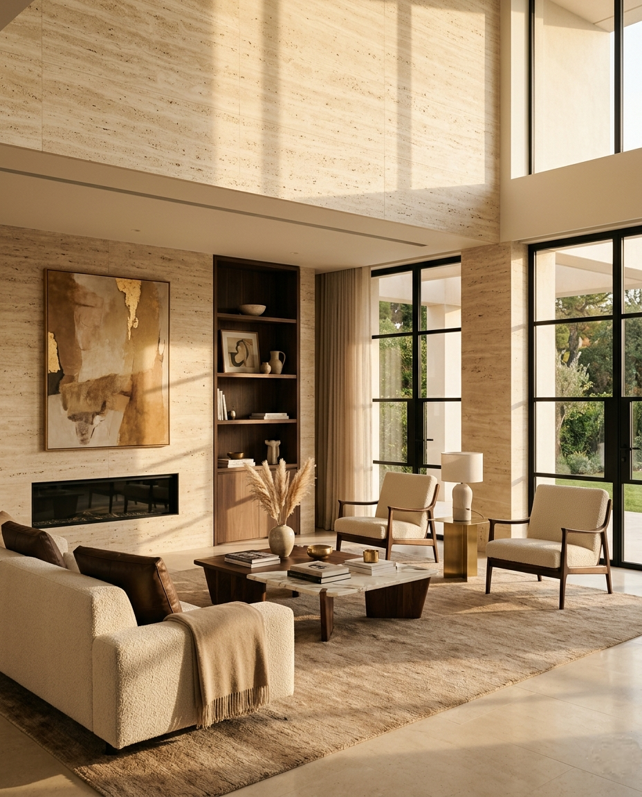

Виртуальный дизайнер Castelia
Создай дизайн
за 1 минуту
Загрузите фото комнаты или фасада дома — и примерьте на стены гибкий камень Castelia. Выберите, как вам удобнее: сделать самому, ответить на пару вопросов или поговорить с ИИ-дизайнером.
✦ Демонстрация движка
Было → стало за минуту
Потяните ползунок — это реальная генерация Castelia на одном фото. Переключите стиль ниже.


ДО
ПОСЛЕ · CASTELIA
15 коллекций гибкого камня · мрамор, травертин, бетон, дерево, кирпич, металл
🖌️ Самостоятельно
Отметьте кистью, куда лечь материалу
Загрузите фото, выберите до 3 материалов и закрасьте на фото нужные зоны.
Загрузите фото
Перетащите файл сюда или нажмите для выбора
JPG · PNG · HEIC · до 15 МБ
Размер
✨ Дизайнер интерьера и фасада
Несколько простых вопросов
Отвечайте, нажимая на карточки — это займёт минуту.
💬 Профессиональный ИИ
Чат с ИИ-дизайнером
Напишите, что задумали — например «лофт в гостиной» или «фасад дома в современном стиле». Можно приложить фото комнаты или фасада.
📷 Фото приложено
✦ Готово
Ваш дизайн готов
Так гибкий камень Castelia смотрится на ваших стенах.